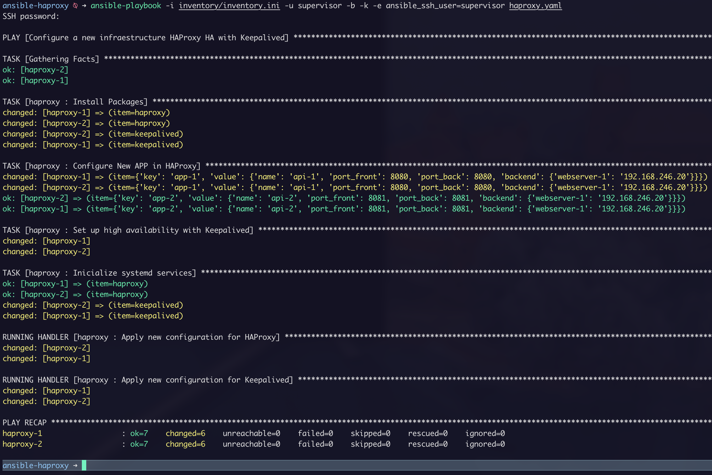
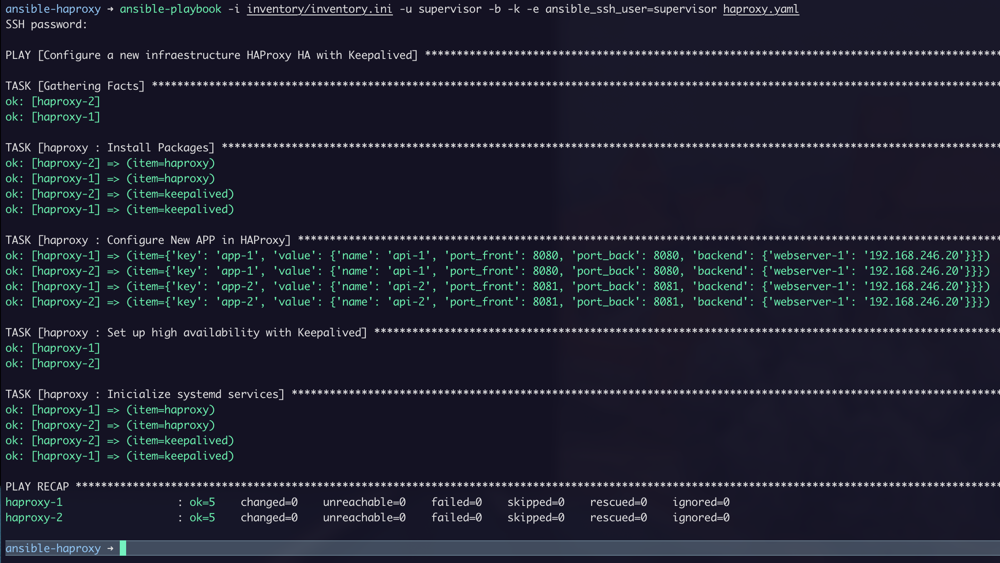

HAProxy LoadBalancer em HA com Keepalived Automatizado
Toda a infraestrutura de TI hoje seja ela Cloud ou on-premise utiliza balanceadores de carga como a sua porta de entrada. Hoje acredito que todos os provedores de serviço de Cloud com salve exceções não fornecem esse tipo de serviço.
Mas e na infraestrutura on-premise como implementamos isso?
Nesse artigo trago a configuração do HAProxy em HA com Keepalived automatizado com ansible. Uma solução simples e bastante robusta dependendo da sua infraestrutura.
Requisitos
- SSH
- Ansible
- 2 Máquinas virtuais
- 2x
- Ubuntu Server 18.04
- 2 vCPU
- 1GB RAM
- 50GB Disco
Diretórios
Precisamos criar uma árvore de diretórios para que o ansible execute de forma correta. Na documentação do ansible existe um guia de como fazer isso. Link.
mkdir -p ansible-haproxy/{inventory/group_vars,roles,}
mkdir -p roles/haproxy
mkdir -p roles/haproxy/handlers
mkdir -p roles//haproxy/tasks
mkdir -p roles/haproxy/templates
tree -L 5 ansible-haproxy
ansible-haproxy
├── inventory
│ └── group_vars
└── roles
└── haproxy
├── handlers
├── tasks
└── templates
7 directories, 0 files
Arquivos
-
inventory.ini
Esse arquivo é responsável por armazenar os hosts que serão utilizados para configurar os servidores HAProxy.
Crie o arquivo no diretório ansible-haproxy/inventory.
[all]
haproxy-1 ansible_host=192.168.7.5 ip=192.168.7.5
haproxy-2 ansible_host=192.168.7.7 ip=192.168.7.7
[haproxy]
haproxy-1
haproxy-2
-
all.yaml
O arquivo all.yml corresponde as variáveis que serão utilizadas na role de insltação e configuração dos servidores.
vim inventory/group_vars/all.yaml
---
packages:
to_install:
- haproxy
- keepalived
to_remove:
-
services:
to_enable:
- haproxy
- keepalived
to_disable:
-
-
haproxy.yaml
Esse arquivo contem as variáveis para configuração do HAProxy e Keepalived.
vim inventory/group_vars/haproxy.yaml
---
# Virtual IP que será utilizado pelo Keepalived.
virtual_ipaddress: "192.168.246.254"
# Hostname do servidor primário haproxy, use o mesmo hostname do inventário.
# Ex.
# [all]
# haproxy-1 ansible_host=1.2.3.4
haproxy_master: "haproxy-1"
# Selecione o algoritmo de balanceamento: first, leastconn, static-rr or roundrobin.
balance_algorithm: "roundrobin"
# Selecione o modo HAProxy: layer_7 or layer_4
haproxy_mode: "layer_7"
# Dominio que está em uso.
# OBS: Essa configuração é para o modo Layer 7.
my_domain: "local.lab"
# Para configurar novos APP's basta repetir o bloco de variaveis conforme exemplo abaixo.
# Ex:
# new_app:
# app_1:
# name: "api_1"
# port_front: 8070
# port_back: 30870
# backend: {
# "hostname_1": "10.0.0.1",
# "hostname_2": "172.16.0.1",
# "hostname_3": "192.168.0.1"
# }
# app_2:
# name: "api_2"
# port_front: 8071
# port_back: 30871
# backend: {
# "hostname_1": "10.0.0.1", # Finalize a linha com "," caso use mais de um backend.
# "hostname_2": "172.16.0.1",
# "hostname_3": "192.168.0.1"
# }
new_app:
app-1:
name: "api-1"
port_front: 8080
port_back: 8080
backend: {
"webserver-1": "192.168.246.20",
}
app-2:
name: "api-2"
port_front: 8081
port_back: 8081
backend: {
"webserver-1": "192.168.246.20",
}
-
tasks - main.yaml
Nesse arquivo configuramos as tasks(tarefas) para o ansible fazer toda a sua mágica. A sintaxe do arquivo yaml é bem intuitiva visto que você está declarando toda a configuração.
vim roles/haproxy/tasks/main.yaml
---
- name: "Install Packages"
apt:
name: "{{ item }}"
state: present
loop: "{{ packages.to_install }}"
- name: "Configure New APP in HAProxy"
template:
src: haproxy.cfg.j2
dest: /etc/haproxy/haproxy.cfg
owner: root
group: root
mode: 0644
with_dict: "{{ new_app }}"
notify: "Apply new configuration for HAProxy"
- name: "Set up high availability with Keepalived"
template:
src: keepalived.conf.j2
dest: /etc/keepalived/keepalived.conf
owner: root
group: root
mode: 0644
notify: "Apply new configuration for Keepalived"
- name: "Inicialize systemd services"
systemd:
name: "{{ item }}"
state: started
enabled: yes
loop: "{{ services.to_enable }}"
-
handlers - main.yaml
Esse arquivo armazena as tasks handlers. Essas tasks só serão executadas caso tenha alguma modificação nas configurações que o ansible aplicar.
vim roles/haproxy/handlers/main.yaml
---
- name: "Apply new configuration for HAProxy"
systemd:
name: haproxy
state: restarted
- name: "Apply new configuration for Keepalived"
systemd:
name: keepalived
state: restarted
-
templates
Com base nesses arquivos templates(modelo) o ansible cria os arquivos de configuração do HAProxy e do Keepalived dinamicamente, ou seja, toda alteração que for feita nesses arquivos será aplicada em ambos os servidores.
Com isso conseguimos trabalhar de forma idempotente.
-
haproxy.cfg.j2
vim roles/haproxy/templates/haproxy.cfg.j2
global
ulimit-n 100042
maxconn 4000
daemon
# turn on stats unix socket
stats socket /var/lib/haproxy/stats mode 0600 level admin
### Defaults
defaults
log global
{% if haproxy_mode == "layer_7" %}
mode http
{% endif %}
option dontlognull
option http-server-close
option redispatch
retries 3
timeout http-request 10s
timeout queue 1m
timeout connect 10s
timeout client 1m
timeout server 1m
timeout http-keep-alive 10s
timeout check 10s
maxconn 3000
### Stats
listen stats
bind *:9000
stats enable
stats realm Haproxy\ Statistics
stats uri /haproxy_stats
stats auth admin:password
stats refresh 30
stats show-node
mode http
{% if haproxy_mode == "layer_7" %}
frontend app
log /dev/log local0 debug
bind *:80
reqadd X-Forwarded-Proto:\ http
#
# ACL
{% for acl, app in new_app.items() %}
acl {{ acl }} hdr(host) -i {{ acl }}.{{ my_domain }}
{% endfor %}
{% for acl, app in new_app.items() %}
use_backend app-{{ app.name }} if {{ acl }}
{% endfor %}
{% for acl, app in new_app.items() %}
backend app-{{ app.name }}
balance {{ balance_algorithm }}
mode http
option httpchk HEAD /
{% for host_name, ip_addr in app.backend.items() %}
server {{ host_name }} {{ ip_addr }}:{{ app.port_back }} check
{% endfor %}
{% endfor %}
{% endif %}
{% if haproxy_mode == "layer_4" %}
{% for acl, app in new_app.items() %}
#
### app-{{ app.name }}
frontend app-{{ app.name }}
log /dev/log local0 debug
bind *:{{ app.port_front }}
default_backend app-{{ app.name }}
backend app-{{ app.name }}
balance {{ balance_algorithm }}
mode tcp
{% for host_name, ip_addr in app.backend.items() %}
server {{ host_name }} {{ ip_addr }}:{{ app.port_back }} check
{% endfor %}
{% endfor %}
{% endif %}
-
keepalived.conf.j2
vim roles/haproxy/templates/keepalived.conf.j2
vrrp_script chk_haproxy {
script "/usr/bin/killall -0 haproxy" # check the haproxy process
interval 2 # every 2 seconds
weight 2 # add 2 points if OK
}
vrrp_instance VI_1 {
interface ens32 # interface to monitor
{% if inventory_hostname == haproxy_master %}
state MASTER # MASTER on ha1, BACKUP on ha2
{% else %}
state BACKUP # MASTER on ha1, BACKUP on ha2
{% endif -%}
virtual_router_id 51
{% if inventory_hostname == haproxy_master %}
priority 101 # 101 on ha1, 100 on ha2
{% else %}
priority 100 # 101 on ha1, 100 on ha2
{% endif -%}
advert_int 1
unicast_src_ip {{ ansible_host }}
virtual_ipaddress {
{{ virtual_ipaddress }} # virtual ip address
}
track_script {
chk_haproxy
}
}
-
playbook - haproxy.yaml
Playbook que será utilizado pelo ansible para aplicar a role de configuração do HAProxy e Keepalived.
vim ansible-haproxy/haproxy.yaml
---
- name: "Configure a new infraestructure HAProxy HA with Keepalived"
hosts:
- haproxy
roles:
- {role: haproxy, tags: "haproxy"}
No final a estrutura de diretórios e arquivos fica assim.
tree -L 5 ansible-haproxy
ansible-haproxy
├── haproxy.yaml
├── inventory
│ ├── group_vars
│ │ ├── all.yaml
│ │ └── haproxy.yaml
│ └── inventory.ini
└── roles
└── haproxy
├── handlers
│ └── main.yaml
├── tasks
│ └── main.yaml
└── templates
├── haproxy.cfg.j2
└── keepalived.conf.j2
7 directories, 8 files
">
A configuração aplicada pelo ansible não será alterada até que você modifique. Idempotência :ˆD!
">
Demo

Conclusão
Mesmo em uma infraestrutura on-premise é possível trabalhar com soluções simples e robustas. A principio parece trabalhoso codificar tudo isso, mas, quando você estiver trabalhando com dezenas ou até centenas de hosts o cenário é totalmente favorável.
Projeto: https://github.com/fabianoflorentino/ansible-haproxy